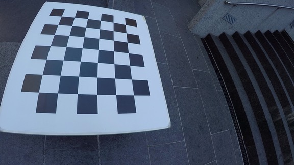
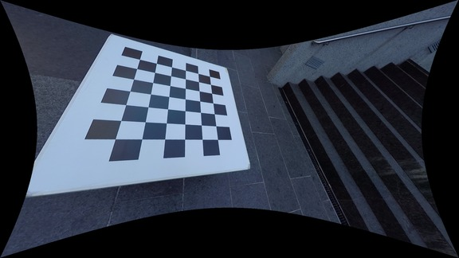
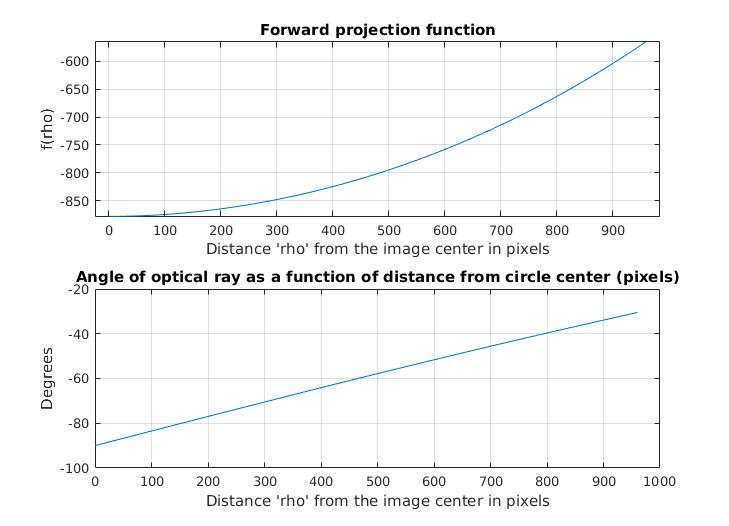
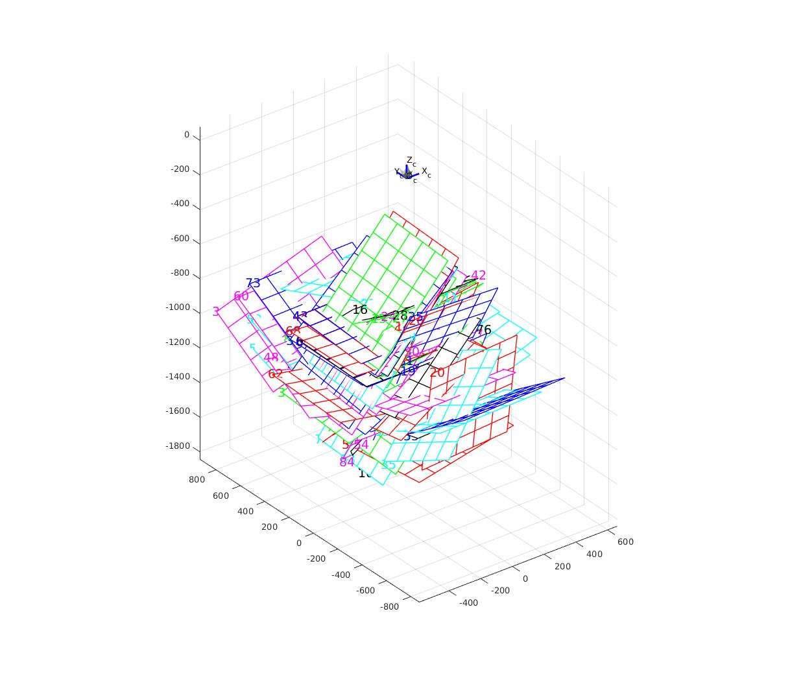

Intrinsic Calibration
Two different models were used for the intrinsic calibration of the cameras:
- standard perspective model with two radial distortion distortion coefficients. This model works well for the Tango Bottom RGB camera and the VI sensor cameras
- omnidirectional model for the GoPro cameras and the Tango Top. This is necessary to accurately model the wide-angle lenses projection function all the way to the corners of the sensor.
A square chessboard calibration target of 7x8 was used with square
length of 108mm. The images were cut from video, and are available
under the intrinsic_calibration directory (requires separate download).
How to Use the Calibration Models
The camera calibration models are stored under tools/intrinsic_calibration/cc.mat and can be loaded
in Matlab like this:
>> cd tools/matlab;
>> load ../intrinsic_calibration/cc.mat
>> cc
cc =
[1x1 struct] [1x1 struct] [1x1 struct] [1x1 cameraParameters] [1x1 struct] [1x1 cameraParameters] [1x1 cameraParameters]
The cc cell array has the cameras in the order:
| 1 | 2 | 3 | 4 | 5 | 6 | 7 |
| GoPro C1 | GoPro C2 | GoPro C3 | Tango Bottom | Tango Top | VI Sensor Left | VI Sensor Right |
Undistorting Tango Bottom and VI Sensor images
To undistort images for Tango Bottom’s RGB camera or the VI Sensors, you can directly use the Matlab undistortImage function. The following matlab
line would read an image, undistort it with the Tango Bottom calibration parameters, and display it:
>> imtool(undistortImage(imread('foo.jpg'),cc{4}));
Undistorting GoPro and Tango Top Images
Images taken with the fisheye lenses require the use of a custom undistortion matlab function for undistortion. Undistortion is a two-step process: first a undistortion map is pre-computed (this needs to be done only once per camera), which then is used to perform the actual undistortion. For example, this would be the steps to undistort an image for GoPro camera C1:
>> u = ocam_undistort_map(cc{1}, 'OutputView', 'full');
>> imtool(ocam_undistort(imread('../../intrinsic_calibration/c1/frame_0011.png'), u));
|  |  |
For more undistortion options, see help ocam_undistort_map. In
particular setting OutputView to same is a useful choice, but you
can also increase the resolution to reduce quality loss during
undistort. Note that the intrinsic matrix $\cc{\mvec{K}}$ depends on the undistortion
mode used, and is in fact a field of the undistortion structure:
>> u
u =
map: [2073600x2 double]
K: [3x3 double]
res: [1920 1080]
>> u.K'
ans =
472.402621799665 0 958.773771858922
0 476.268511742695 539.250755510546
0 0 1
If instead OutputView same is used, the focal lengths will increase substantially!
Matlab Toolbox: Tango Bottom and VI Sensors
We use Matlab’s built-in camera calibration tool, which uses the camera model proposed by Bouguet for the CalTec Camera Calibration Toolbox. The model consists of a perspective projection followed by a radial distortion. For parsimony, we did not allow for skew or tangential distortion, and limited the number of radial distortion coefficients to two. This leads to the following model: the 3D point $\cc{\cvec{X}{W}}$ in world coordinates is first transformed to the camera frame by the current camera pose $\cc{\ctrans{T}{W}{C}}$: $$ \cc{\vvec{x}{y}{z}=\ \cvec{X}{C}=\ \ctrans{T}{W}{C}\ \cvec{X}{W}}. $$ Then, the projected 2D coordinates are obtained via: $$ \cc{\vvt{x’}{y’} =\ \vvt{x/z}{y/z}}. $$ Now the radial distortion is captured by: $$ \cc{\vvt{x\dp}{y\dp} =\ \vvt{x’(1+k_1r’^2 +k_2r’^4)}{y’(1+k_1r’^2 +k_2r’^4)}}, $$ where $\cc{r’^2 = x’^2 + y’^2}$. Lastly, using the intrinsic matrix yields the sensor pixel coordinates: $$ \cc{\vvt{u}{v} = \begin{bmatrix}f_x & 0 & c_x\\ 0 & f_y & c_y\end{bmatrix}\vvec{x\dp}{y\dp}{1}}. $$
Note that the camera models as stored in the Matlab cell array (see above) follow Matlab convention, so their intrinsic matrix is transposed compared to the table below! The VI sensor calibration is based off the rectified images (this explains why the radial distortion is virtually zero), and is therefore the correct calibration to use for the rectified video frames in the ROS bag.
| Camera | $\cc{\begin{bmatrix}f_x & 0 & c_x\\\ 0 & f_y & c_y\end{bmatrix}}$ | $\cc{k_1}$ | $\cc{k_2}$ |
| Tango Bottom RGB | $\cc{\calmat{ 1959.84}{ 1959.39}{ 981.87}{ 524.94}}$ | 0.21253 | -0.46023 |
| VI Sensor Left | $\cc{\calmat{ 445.80}{ 445.15}{ 371.50}{ 237.33}}$ | -0.03671 | 0.05260 |
| VI Sensor Right | $\cc{\calmat{ 445.75}{ 445.23}{ 369.28}{ 238.72}}$ | -0.03427 | 0.04858 |
Fisheye Intrinsic Calibration using OCamCalib Toolbox
We used the OCamCalib Toolbox (version 3.0) to fit a 4-parameter polynomial to the forward projection function. The image center was held fixed for parsimony, and because good results (less than 1px average reprojection error) were obtained already without allowing the center to float.
Here the forward projection function of the GoPro Hero 4 camera C2. Note that the horizontal FOV is twice the angle covered in the graph (which is about 60 degrees).

Here a graphical illustration of the different extrinsic positions that were assumed, showing that we took images with the calibration target as far in the corner as possible: 
Below are the calibration parameters obtained from the toolbox. Refer to 2 for description of the parameters and the camera model. The easiest way to use these numbers is by loading the calibration data into Matlab as described here. Note that there is no intrinsic camera matrix $\cc{\mvec{K}}$ in this table since $\cc{\mvec{K}}$ depends on the way in which the undistortion is done.
| Camera | width | height | xc | yc | c | d | e | ss [polynomial coefficients] |
| GoPro C1 | 1920 | 1080 | 540 | 960 | 1.008 | $2.710\times 10^{-4}$ | $2.158\times 10^{-4}$ | $\cc{\begin{bmatrix}-867.43&0&3.113\times 10^{-4}&5.142\times 10^{-8}&2.253\times 10^{-11}\end{bmatrix}}$ |
| GoPro C2 | 1920 | 1080 | 540 | 960 | 1.004 | $2.989\times 10^{-4}$ | $0.921\times 10^{-3}$ | $\cc{\begin{bmatrix}-877.47&0&3.339\times 10^{-4}&6.175\times 10^{-9}&1.104\times 10^{-11}\end{bmatrix}}$ |
| GoPro C3 | 1920 | 1080 | 540 | 960 | 1.006 | $1.794\times 10^{-4}$ | $5.722\times 10^{-4}$ | $\cc{\begin{bmatrix}-875.98&0&3.358\times 10^{-4}&2.055\times 10^{-8}&2.877\times 10^{-11}\end{bmatrix}}$ |
| Tango Top Fisheye | 640 | 480 | 240 | 320 | 1.000 | $4.162\times 10^{-4}$ | $1.303\times 10^{-4}$ | $\cc{\begin{bmatrix}-273.59&0&1.292\times 10^{-3}&5.874\times 10^{-7}&2.741\times 10^{-9}\end{bmatrix}}$ |